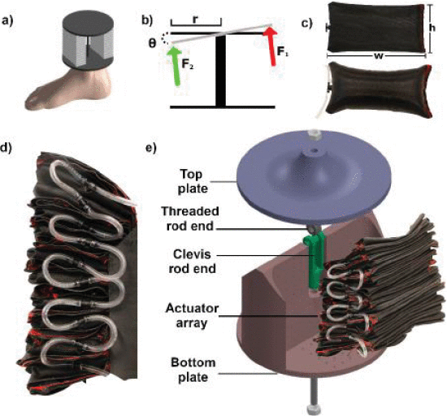
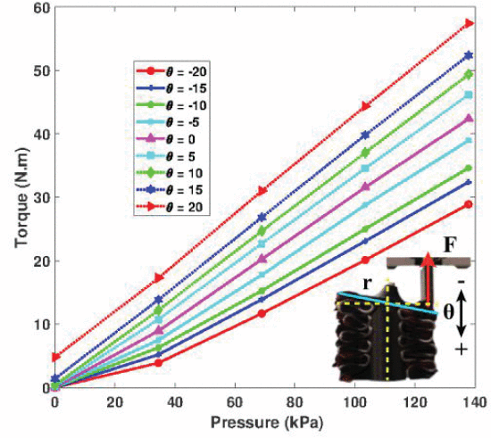

Arizona State University, USA · Soft Robotics · Ankle Prosthetics · Fabric-Based Actuation
Fabric-Based Soft Ankle Module to Mimic Human Ankle Stiffness
Affiliation: Arizona State University, USA
This project focused on the design and fabrication of a compliant fabric-based soft ankle module using inflatable actuator arrays to reproduce ankle stiffness behavior during walking.
Project overview
Human ankle stiffness plays an important role in shock absorption, propulsion, and stable walking. This project developed a fabric-based soft ankle module capable of generating plantarflexion and dorsiflexion torque using stacked inflatable actuator arrays.
The module was designed as a lightweight, compliant alternative for mimicking ankle stiffness. The architecture used a top plate, bottom plate, revolute joint, and antagonistic soft actuator arrays to generate torque about the ankle-like joint.
My contribution
- Worked on the design and fabrication of the fabric-based soft ankle module.
- Supported development of the soft inflatable actuator arrays used to generate plantarflexion and dorsiflexion torque.
- Contributed to physical prototyping and integration of the actuator arrays with the ankle module structure.
- Helped translate functional requirements such as compact size, range of motion, torque capacity, and mechanical behavior into a fabricated soft robotic module.
Objectives
- Design a compliant fabric-based ankle module for plantarflexion and dorsiflexion.
- Use inflatable actuator arrays to generate ankle-like torque and stiffness.
- Keep the module lightweight and compact for lower-limb robotic applications.
- Fabricate and integrate the actuator arrays with a mechanical ankle structure.
- Evaluate torque output as a function of pressure and end-effector angle.
Results
- The module was designed to target 50% of biological ankle torque during walking.
- The soft ankle module achieved a wide range of motion in plantarflexion and dorsiflexion.
- Torque characterization showed increasing torque output with increasing actuator pressure across multiple end-effector angles.
- The fabric-based actuator array architecture demonstrated the feasibility of using soft pneumatic structures to mimic ankle stiffness.
Tools and methods
Technical focus
Selected figures

Soft ankle module overview. The fabric-based soft ankle module uses actuator arrays arranged around an ankle-like structure to create end-effector rotation for plantarflexion and dorsiflexion.

Design and fabrication. The module combines a top plate, bottom plate, revolute joint, and stacked fabric-based inflatable actuator arrays to generate torque about the ankle joint axis.

Torque-pressure characterization. Experimental torque output increased with actuator pressure across different end-effector angles, supporting data-driven modeling of the soft ankle module.
These are your provided soft ankle module figures added directly to the portfolio project page.